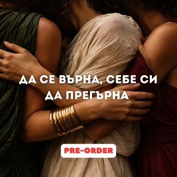

INTNS · Mind, Health & Body
Създавам нова
култура на живот.
Методът INTNS обединява ум, здраве и тяло. Без крайности — с ясна структура, грижа към себе си и подкрепа по пътя.
Методът INTNS
Три опори, един начин на живот.
-
01
Mind
Промяната започва отвътре — от начина, по който мислиш и се отнасяш към себе си.
-
02
Health
Хранене и навици, които се вписват в живота ти, а не го подчиняват.
-
03
Body
Движение с цел и постоянство — за тяло, в което се чувстваш у дома.

INTNS 3 Day Reset · Pre-order
Да се върна, себе си да прегърна.
Новото издание на 3-дневната програма. Три дни, в които спираш, връщаш се към себе си и започваш отначало — по метода INTNS.
Еднократно плащане · сигурно през Stripe
Програми
Намери своя път.
Не си сигурна откъде да започнеш? Пиши ми и ще те насоча.
- 01 3 Day Reset Кратко начало, за да се върнеш към себе си. Най-лесната първа стъпка.
- 02 School Основите на метода в група — структура, ритъм и общност.
- 03 Academy Лична работа с мен — индивидуален подход и подкрепа отблизо.
- 04 Corporate Методът INTNS за екипи и компании.
- 05 Retreat Няколко дни далеч от всичко — на живо, заедно.
За мен
„Аз съм Тони. Създадох INTNS, защото вярвам, че промяната на тялото започва с промяна в начина, по който живееш.“
Чрез метода INTNS помагам на жените да изградят живот, в който грижата за ума, здравето и тялото е естествена част от деня — не временна диета.
Последвай ме в InstagramГотова ли си да започнеш?
Започни с 3 Day Reset или ми пиши — заедно ще изберем програмата, която е за теб.